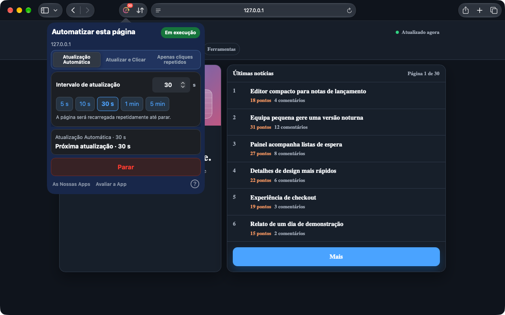
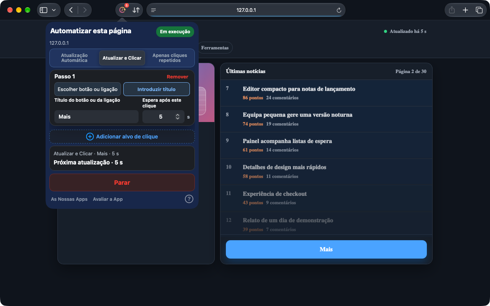
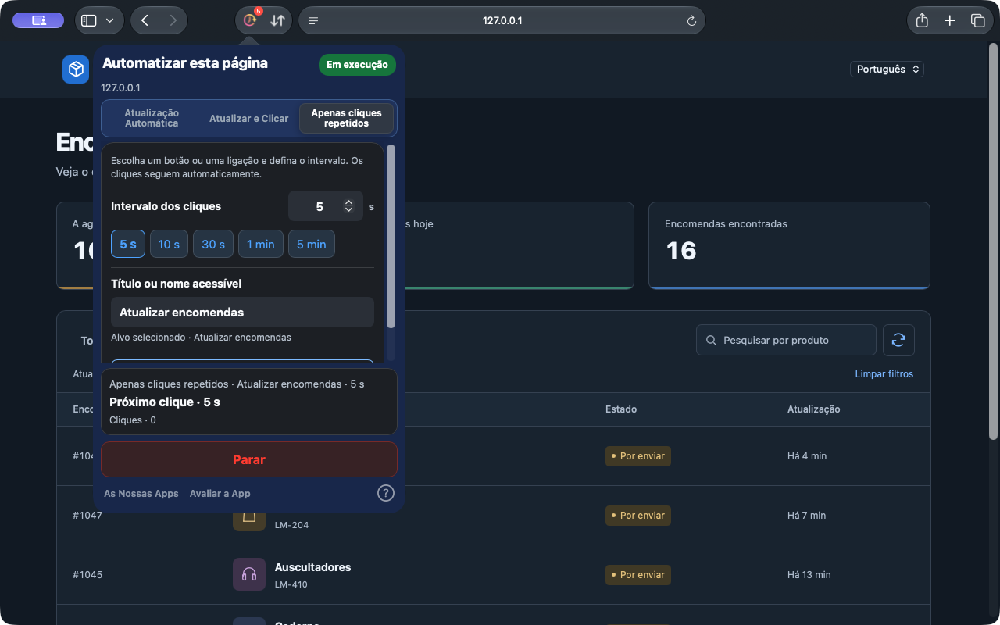

Atualização Automática
Escolha um intervalo predefinido ou preciso para manter painéis, inventários e páginas de estado atualizados.
Safari no iPhone, iPad e Mac. Chrome no computador.
Por vezes, é preciso atualizar a página inteira. Outras vezes, basta um clique. O Auto Refresh & Clicker trata dessas ações repetidas nas páginas web do Safari.
No navegador. Sem criar uma conta.
Antevisão do Safari 1.10.0. Estas novidades estão em preparação; consulte a versão disponível na loja. A extensão do Chrome é atualizada em separado.
Ver como funciona


Safari no Mac 1.10.0 · Capturas reais numa página de demonstração local
De um painel em mudança a um botão que usa frequentemente: escolha a tarefa adequada para a página.
Escolha um intervalo predefinido ou preciso para manter painéis, inventários e páginas de estado atualizados.
Escolha um botão ou uma ligação na página, ou escreva o título. Após atualizar, os cliques seguem a sua ordem, com uma espera depois de cada passo.
Repita cliques sem recarregar a página. Selecione até um ícone, defina o intervalo e deixe a lista atualizar-se.
Poucos passos de configuração e um estado fácil de verificar.
Abra a app após a instalação. Ative a extensão nas definições do Safari e permita o acesso ao site.
Escolha um modo e defina o intervalo ou a espera após cada passo. Para clicar, selecione um botão ou uma ligação na página, ou escreva o respetivo título.
Inicie e verifique o estado e a contagem decrescente. Pode parar a tarefa ou aplicar alterações a qualquer momento.
Não precisa de uma conta Web. As definições são guardadas localmente e as tarefas são geridas por separador.
No iPhone e iPad, mantenha o Safari em primeiro plano. O sistema pode suspender tarefas em segundo plano ou com o dispositivo bloqueado.
PrivacidadeAs tarefas são executadas em páginas do Safari ou na extensão Chrome para computador. Não controla outras apps nem interfaces do sistema.
Abra uma vez a app instalada e veja Definições do Safari → Extensões. Utilize o Safari 15.4 ou posterior. Se continuar ausente, contacte o suporte com as versões do macOS, Safari e da app, e a origem da instalação.
O funcionamento contínuo em segundo plano não é garantido. O iOS e o iPadOS podem suspender tarefas do navegador. Mantenha o Safari em primeiro plano.
Na versão atual para Safari, edite a configuração e aplique as alterações. O resumo apresenta a tarefa ativa. Escolha Parar para terminar.
Safari no iPhone, iPad e Mac. Chrome no computador.
Consulte os preços e a compatibilidade em cada loja.